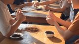

Kopi pertama kali masuk ke Eropa melalui pelabuhan Venesia pada tahun 1615. Pada awalnya, kopi dianggap sebagai minuman yang eksklusif dan hanya dikonsumsi oleh kalangan elit. Namun, seiring berjalannya waktu, kopi mulai menyebar luas di Eropa, dengan kafe-kafe yang mulai muncul di banyak kota besar seperti Paris dan London. Kafe menjadi tempat berkumpulnya para intelektual, pedagang, dan artis untuk berdiskusi, berbagi ide, dan tentunya menikmati secangkir kopi. XHTML & CSS.
Continue reading... | 160 comments